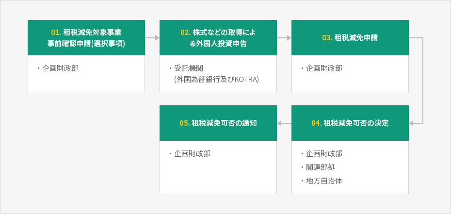
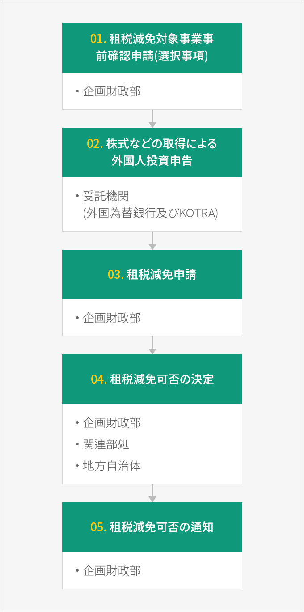

手続き
- Home
- インセンティブ
- 租税減免
- 手続き
外国人投資企業が租税減免を受けようとする場合又は内容が変更される場合、必ず企画財政部長官(自由貿易地域の場合は自由貿易管理権者)に租税減免申請をしなければならない。
※ 関連規定 : 「租税特例制限法」第121条の2第⑥項
申請書の提出先は企画財政部対外経済総括課(044-215-7625)で、外国人投資家が外国人投資申告と租税減免申請を同時に行う場合は、外国為替銀行(受託銀行)及びKOTRAに外国人投資申告書とともに租税減免申請書を提出することができる。
※ 関連規定 : 「租税特例制限法施行規則」第15条の3及び企画財政部告示第2017-10号、2017.4.4.「外国人投資に対する租税減免規程」第5条第②項
申請期限は、新規投資の場合、事業開始日の属する課税年度の終了日までであり、租税減免決定を受けた事業内容を変更した場合は当該変更事由が発生した日から2年になる日までに変更申請をしなければならない。
租税減免申請手続き



- 租税減免対象事業 事前確認申請(選択事項) - 企画財政部
- 株式などの取得によ る外国人投資申告 - 受託機関(外国為替銀行及び KOTRA)
- 租税減免申請 - 企画財政部
- 租税減免可否の決定 - 企画財政部, 関連部処, 地方自治体
- 租税減免可否の通知 - 企画財政部

租税減免対象事業の事前確認
外国人投資家が投資決定の参考にするために、外国人投資申告をする前に租税減免対象事業であるかどうかの確認を事前に申請することができる。事前確認の効力は、租税減免の対象技術かどうかを確認するのみであるため、投資申告後には、別途で租税減免申請をしなければならない。※ 関連規定 : 「租税特例制限法」第121条の2第⑦項
租税減免の決定及び通知
企画財政部長官は租税減免申請又は租税減免内容の変更申請について、租税減免基準に該当するか否かを主務部の長官及び地方自治体の長と協議の上、20日以内に減免の可否又は減免内容変更の有無を決定し、それを申請者、国税庁長、関税庁長、地方自治体長に通知する。
ただし、やむを得ない場合、20日の範囲内でその処理期間を延長することができる。
非減免事業の決定予告通知
企画財政部長官は、租税減免申請を受けて非減免対象事業と決定する場合、当該申請日から20日以内に決定予告を通知する。申請者は、その通知を受けた日から20日以内に疎明資料を添付して通知内容の適正性に対する審査を書面で要請することができる。企画財政部長官は要請を受けた日から20日以内に減免の可否又は減免内容変更の有無を決定し、その結果を通知しなければならない。※ 関連規定 : 「租税特例制限法」第121条の2第⑧項、同法施行令第116条の3第①～⑥項